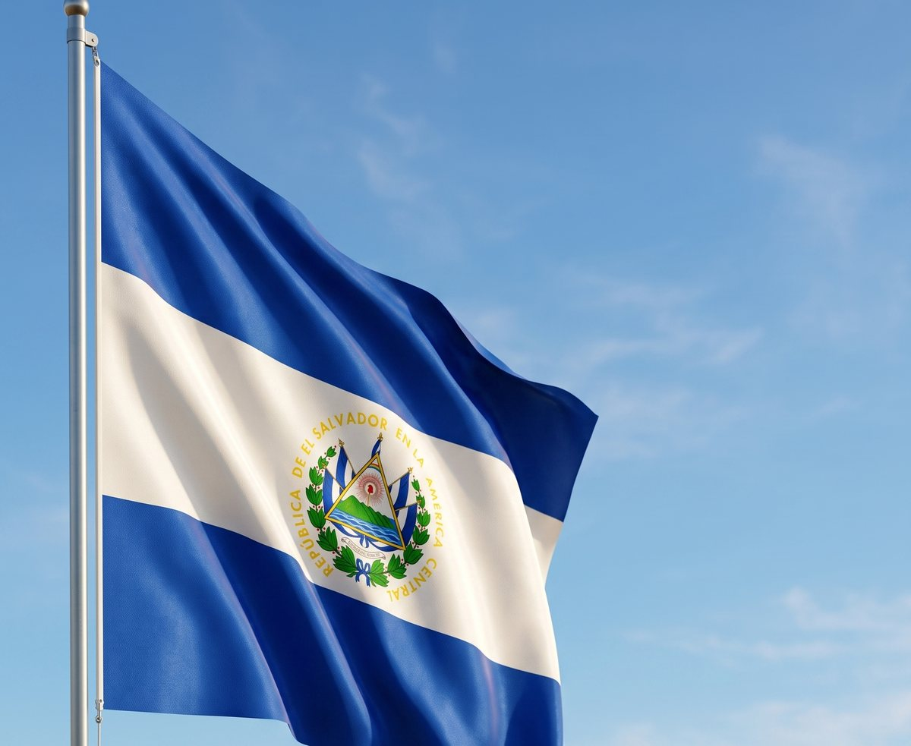

Confeccionadas en nuestro taller de Sonsonate: doble tela para que las dos caras queden al derecho, escudo sublimado de colores firmes, dobladillo reforzado y ojetes. Desde $25 + IVA.
Cada bandera se corta y se cose en el taller, con la medida que el cliente pida. Eso significa que podemos ajustar el tamaño al asta que ya tiene la escuela o la institución, en lugar de acomodarse a una medida de fábrica.
El escudo va sublimado, que es el acabado que aguanta el sol y el lavado sin descascararse, y la bandera se arma en doble tela: dos capas cosidas para que el escudo se lea correctamente por ambos lados. Una bandera de una sola capa se ve invertida por detrás.
Trabajamos para escuelas, alcaldías, empresas e instituciones de todo El Salvador, y atendemos licitaciones por COMPRASAL con la documentación formal que corresponde.

| Medida | Precio |
|---|---|
| 1.00 × 0.60 m · escritorio y aula | $25 + IVA |
| 1.50 × 0.90 m · desfile y patio | $35 + IVA |
| 2.45 × 1.45 m · asta institucional | $59 + IVA |
Otras medidas o con el logo de su institución: se cotizan a pedido.
Dos capas cosidas: las dos caras quedan al derecho, sin el escudo invertido por detrás.
Color firme que aguanta sol y lavado. También bordado, si el cliente lo prefiere.
Costura de refuerzo en los cuatro lados, que es por donde una bandera empieza a deshilacharse.
Para izarla en asta o amarrarla sin que la tela se rasgue.
Hacemos también las de Guatemala, Honduras, Nicaragua y Costa Rica, en las mismas medidas y con el mismo acabado. Son las que piden las escuelas para los actos del 15 de septiembre, cuando se conmemora la independencia de Centroamérica.
No. Los precios publicados son más IVA. Emitimos factura o crédito fiscal a nombre de UDP Confecciones IMIS.
Sí. Confeccionamos cualquier medida a pedido, incluidas las de asta institucional y las de licitaciones. Solo hay que indicar el largo y el alto.
Que lleva dos capas cosidas, de modo que el escudo y las franjas se ven al derecho por ambos lados. Una bandera de una sola tela se ve invertida por detrás.
Sí: Guatemala, Honduras, Nicaragua y Costa Rica, en las mismas medidas y con el mismo acabado.
Sí. Sublimamos el logo o escudo institucional sobre la bandera, o lo bordamos si se prefiere. Se cotiza según el tamaño del arte.
Díganos la medida y la cantidad. Le cotizamos por WhatsApp el mismo día.
Cotizar bandera por WhatsApp